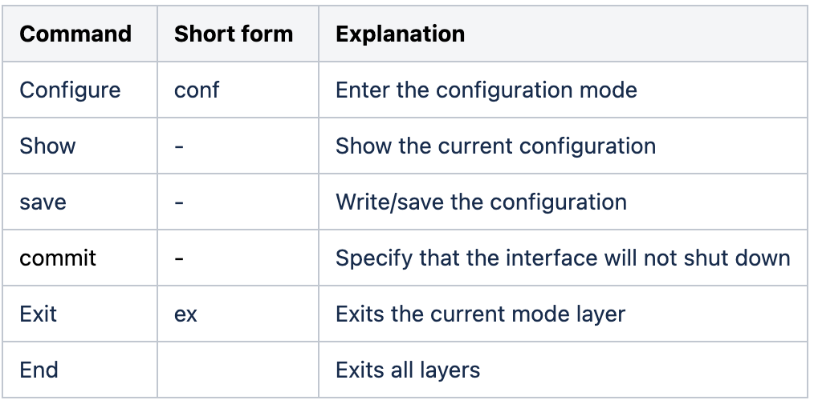

VyOS
VyOS is an open-source network operating system (NOS) based on Debian GNU/Linux. It provides powerful networking features, including routing, firewalling, and VPN, and is used in various network deployment scenarios. With its CLI and GUI for configuration, VyOS is user-friendly for all skill levels. Trusted by enterprises, service providers, and network administrators, VyOS is known for its security, protocol support, and routing capabilities.
Here is a link for basic commands of configuration that might be helpful for the labs:
https://docs.vyos.io/en/latest/cli.html
